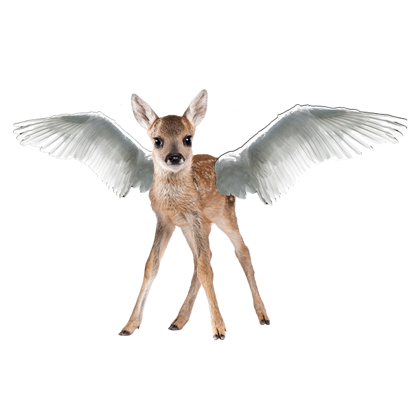

The bunfly is flattered with the gift and nibbles on the sparkling fruit.
The effervescent smell attracts an angel deer, a sweet and and watchful creature.
She offers you a ride on her back, promising to take you anywhere in the enchanted forest and ensuring you arrive safely.

Grand Entrance
Swanicorn Lake
Mushroom Marsh